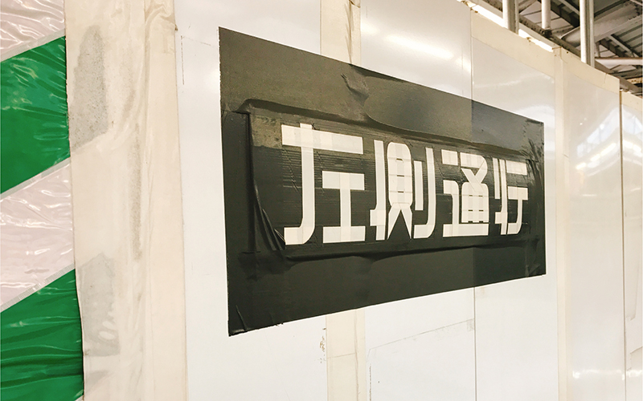
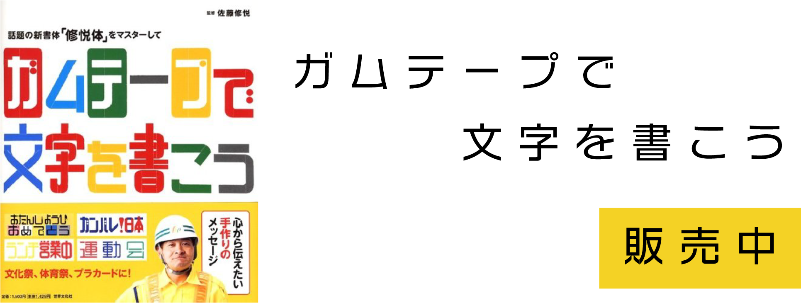

佐藤修悦
SATO SHUETSU
1954年（昭和29年）岩手県石巻市生まれ。銀行員を3年間、喫茶室ルノアールで22年間勤めた後、三和警備保障株式会社にアルバイトとして入社。工事中の駅に掲示した独特なガムテープの字体で作られた案内表示が話題を呼び、いつしか「修悦体」と呼ばれるようになった。修悦体は映画の題字やロゴなどにも使われた。
1954年（昭和29年）岩手県石巻市生まれ。銀行員を3年間、喫茶室ルノアールで22年間勤めた後、三和警備保障株式会社にアルバイトとして入社。工事中の駅に掲示した独特なガムテープの字体で作られた案内表示が話題を呼び、いつしか「修悦体」と呼ばれるようになった。修悦体は映画の題字やロゴなどにも使われた。


ガムテープで文字を書こう販売中